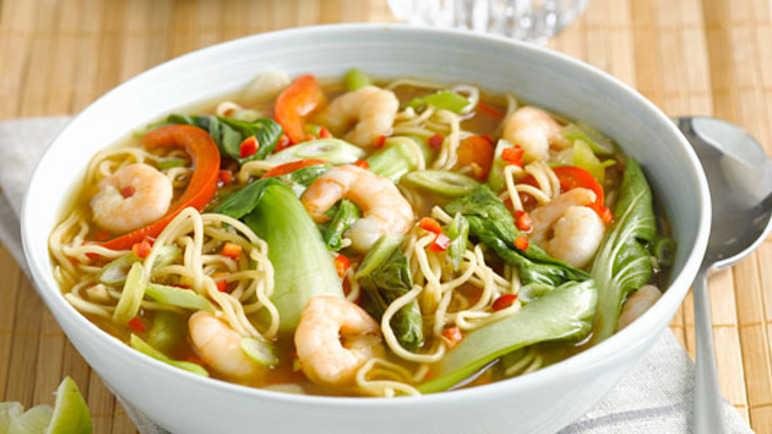

Hot & Sour Fish Soup

Description
Ingredients
- 2 garlic cloves, crushed
- 1 tbsp tamarind paste
- 1 red chilli, finely chopped
- 1 litre vegetable stock
- 1 tbsp light soy sauce
- 1 tsp fish sauce
- 1 tbsp dark soft brown sugar
- 1 lemongrass stalk, bruised
- 1 red pepper, deseeded and finely sliced
- 250g king prawns, defrosted
- 200g pak choi
- 375g fine egg noodles
- 1 lime, juiced
- ½ bunch spring onions, washed, trimmed and finely sliced
Steps
- Put the garlic, tamarind paste and ¾ of the chilli into a large saucepan and cook over a low heat for 2 minutes. Add the vegetable stock and slowly bring to the boil.
- Add the soy sauce, fish sauce, sugar and lemongrass and simmer for 5 minutes. Add the red pepper and cook for a further 5 minutes.
- Add the prawns, pak choi and noodles and simmer for 10 minutes, until piping hot throughout. Season with the lime juice and sprinkle over the spring onions and remaining chilli. Remove the lemongrass stalk before serving.
Home